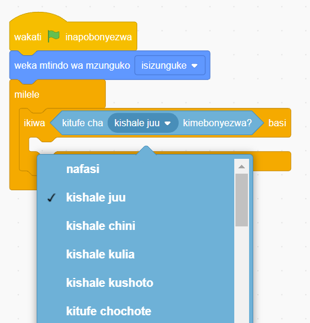

11. Bofya au tumia mishale menyu ya bloku za ‘Kidhibiti’.
12. Buruta na dondosha bloku ya ‘milele’ kwenye eneo la kuandikia. Kisha iunganishe kwenye bloku ya ‘weka mtindo wa mzunguko’.
13. Buruta na dondosha bloku ya ‘ikiwa basi’ kwenye eneo la kuandikia. Kisha iunganishe ndani ya bloku ya ‘milele’.
14. Bofya au tumia mishale menyu ya bloku za ‘Hisi’.
15. Buruta na dondosha bloku ya ‘kitufe cha kimebonyezwa?’ kwenye eneo la kuandikia. Kisha kiingize dani ya bloku ya ‘ikiwa basi’ kama inavyoonekana katika Kielelezo namba 59.

Kielelezo namba 59: Kuchagua ‘kishale juu’
16. Bofya au tumia mishale menyu ya bloku za ‘Mwendo’.
17. Buruta na dondosha bloku ya ‘elekeza mwelekeo’ kwenye eneo la kuandikia. Kisha iingize ndani ya bloku ya ‘ikiwa basi’, badilisha nyuzi kutoka 90 kwenda 0 kama inavyoonekana katika Kielelezo namba 60.